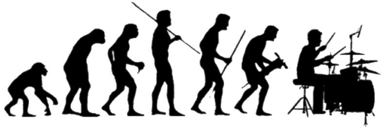
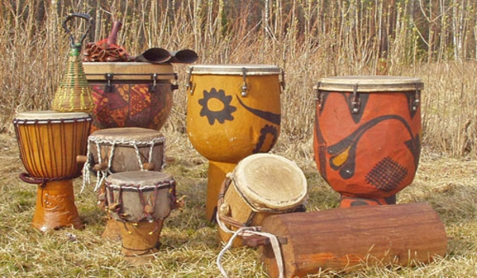

היסטוריה, והתפתחות עם השנים:
התופים למעשה הגיעו לעולם יחד עם האנושות. עוד בתקופת ימי קדם התופים היוו תפקיד כמעין 'פעמון' להכרזת מלחמה בין השבטים. הצעירים שטרם למדו להילחם, התפקיד שלהם (בין היתר) היה לתופף במקצב של הכרזת מלחמה. גם זה כמובן היה אתגר, שכן הם היו צריכים לשמור על תיאום מושלם ביניהם. התופים הם אחד הכלים הראשונים שהמציאו בהיסטוריה, כאשר הראשון שהומצא הוא הכינור, וזמן מה לאחר מכן הגיעו התופים.
בהמשך, התופים היוו תפקיד במסגרת טקסים וריקודים פולחניים. מי שהתחיל עם זה היו השבטים האפריקאים, ולראשונה היה נראה שהתופים גם יכולים לקבל מקצבים שונים, ובכלל להפיק צלילים רבים ושונים.  בתמונה ובהשמעה: תופים אפריקאיים
הפיתוח הגדול ביותר של עולם התופים הגיע בשנות ה-1900, כאשר מוסיקת הבלוז, הג'אז, והרוק אנד רול הגיעו לאוויר העולם, והם הצריכו את השימוש בסוגים רבים של תופים במהלך השיר. שמה כבר למעשה לראשונה נראה המושג מערכת תופים אקוסטית, אשר מורכב מסנר, טומים, ומצילות בצורות שונות (ניתן לראות הרחבה לכך תחת הנושא של סוגי מערכות תופים). הדבר הכי משמעותי שהגיע בתקופה הזאת, הייתה המצאת תוף הבס, אשר מחוברת אליו דוושת רגל, ובאמצעותה ניתן להכות עליה. הדבר הזה למעשה איפשר גדילה ברמת היצירתיות, ברמת הווריאציות, ולמעשה נתן מימד חדש למערכת התופים. המוסיקה המשיכה להתפתח, וזמן קצר לאחר מכן הגיע גם הדוושה השנייה למערכת התופים (הדוושה של המצילה המרכזית – מצילת הי-האט) שכן גם הוא הוסיף מימד חדש למערכת התופים.
בסוף שנות ה-1800, התופים היוו שימוש במצעדים, ובתהלוכות צבאיות ברחובות. היו עושים בזה שימוש לצורך הכרזות שונות, לדוגמה להכרזה על מלך חדש, ניצחון בקרב, וכו'. המתופפים הלכו עם תוף הסנר קשור ברצועה לגופם, ותופפו בו תוך שמירה על קצב ואחידות בין כל המתופפים.
 בתמונה: הצבא של מוסקבה מנציח את ניצחונו בקרב
בתמונה: הצבא של מוסקבה מנציח את ניצחונו בקרב
בהמשך, בתחילת שנות ה-80, הגיע לאוויר העולם המושג תופים אלקטרוניים (ניתן לראות עליו הרחבה תחת סוגי מערכות תופים). בתחילת הדרך נשמעו התופים האלקטרוניים מלאכותיים מאוד, אך הטכנולוגיה התפתחה מאוד וכיום כבר קשה מאד להבחין בין מערכת אקוסטית לאלקטרונית. הצלילים המושמעים על ידי תופים אלקטרוניים הם בדרך כלל צלילים, שנדגמו ממערכות תופים אקוסטיות "רגילות". תופים אלקטרונים נשלטים על ידי רכיב אלקטרוני שהוא ה"מוח" של מערכת התופים ובעזרתו ניתן להפיק מגוון רחב של צלילים, לחבר אליו נגנים חיצוניים, לשלוט על צליל התופים, עוצמתם וכולי.
מאז התופים האלקטרוניים ועד עכשיו, לא נעשו עוד התפתחויות משמעותיות בעולם התופים. כמובן שמאז שנות ה-80 התופים האלקטרוניים הרבה יותר מדויקים למקור, ועם עידן הטלפונים החכמים הגיעו גם אפליקציות שמדמות מערכות תופים, אך עליהם אין טעם לדון, כיוון שעדין לא נראתה הופעה שבא המתופף מופיע עם טלפון חכם ביד. תופים אלקטרוניים בניגוד לכך – כן סביר להניח שנראה בהופעה חייה. אתם מוזמנים לנסות בעצמכם להאזין לקטע הבא ולבחון באיזו מערכת תופים הקליטו את הקטע הבא: